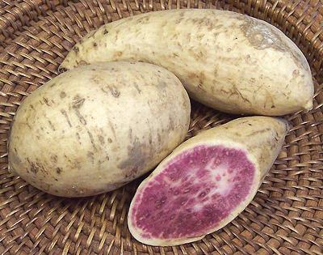

Okinawan Sweet Potato

["Purple Yam" (improper), Hawaiian Sweet Potato; Uala (Hawaii);
Kara-mmu (Japan); C. Ipomoea batatas cv. ayamurasaki]
These light beige skinned sweet potatoes were carried from the
American tropics to the Philippines and China by the Spanish, reaching
Okinawa around 1600. They are now grown on the Japanese main islands,
but still considered "Okinawan", with the Murasaki considered
Japanese". They are quite available in Asian markets here in Los
Angeles, always confusingly labeled "Purple Yam".
Real Purple Yams are not
currently much available in North America. The purple color comes from
anthocyanin flavonoids, which have antioxidant properties, but how
well these survive digestion is debatable.
Young leaves and shoots are also edible and called Kandaba in Okinawa.
They are used in miso soups and as a vegetable side dish, or in recipes
as are other greens.
More on Sweet Potatoes.
This sweet potato is moderately sweet and can be used the same
as white or orange sweet potatoes. The flesh is a bit starchy, closer
to a real yam than most sweet potatoes.
Uses:
This sweet potato is used as an imperfect
substitute for real Purple Yams, not as sweet or as purple. It can be
used the same as regular sweet potatoes as a general vegetable, often
in stews and the like, or baked whole. It is good for sweet potato
recipes where the bright color would be a plus.
Buying:
These are available in Philippine markets
and other markets serving a Southeast Asian population, always
mislabeled as "Purple Yams".
Storing:
These will store in a cool dark place similarly
to potatoes, for about 2 weeks.
Cooking:
Cooked, its purple color darkens to deep
violet. Cut into slices or cubes, it cooks in 10 minutes and begins to
break up at 15 minutes. Fine for baking and most other sweet potato
uses.
mg_okinaz 170610 - www.clovegarden.com
©Andrew Grygus - agryg@clovegaden.com - Photos on this
page not otherwise credited are © cg1 -
Linking to and non-commercial use of this page permitted.